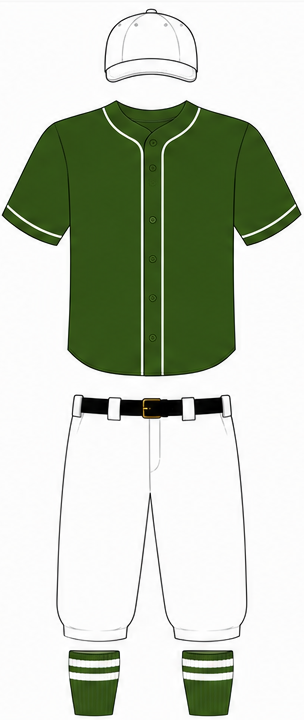
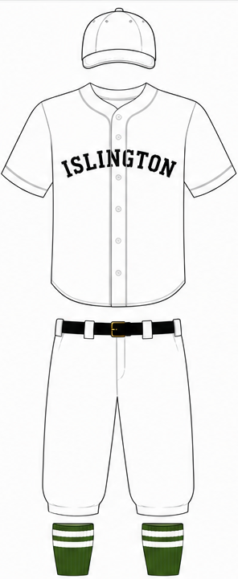

1894 Islington Strollers
Colours: Green and White
Record: X-X-X, Finished X in Capital League
Manager:
Ballpark: Highbury Field
Attendance: (Xst in Capital League)
Uniform:


Home Away
Season Registered Squad
| Player | Pos. | Age | Nat. | Cty. | B. | Awd. | |
|---|---|---|---|---|---|---|---|
| Edward Collins (C) | P | 20 | R | ||||
| William Holt | P | 25 | R | ||||
| George Hunt | P | 27 | L | ||||
| Harry Nash | P | 23 | R | ||||
| Walter Wright | C | 21 | R | ||||
| Robert Cole | C | 20 | L | ||||
| George Kemp | 1B | 22 | L | ||||
| James Barker | 2B | 25 | R | ||||
| Henry Foster | 3B | 25 | R | ||||
| Alfred Porter | SS | 26 | L | ||||
| Charles Osbourne | LF | 30 | R | ||||
| Frederick Marsh | CF | 23 | R | ||||
| Thomas Dale | RF | 33 | R | ||||
| Ernest Young | OF | 32 | R | ||||
| Samuel Reed | OF | 28 | R | ||||
| Arthur Mills | INF | 25 | L | ||||
| Joseph Parker | INF | 25 | R |
Pitching Statistics
Edward Collins
| IP | W | L | R | H | K | BB | ERA | WHI | Awd. |
|---|
William Holt
| IP | W | L | R | H | K | BB | ERA | WHI | Awd. |
|---|
George Hunt
| IP | W | L | R | H | K | BB | ERA | WHI | Awd. |
|---|
Harry Nash
| IP | W | L | R | H | K | BB | ERA | WHI | Awd. |
|---|
Batting Statistics
Walter Wright (C)
| PA | AB | R. | RBI | AVG | OBP | SLG | OPS |
|---|
Robert Cole (C)
| PA | AB | R. | RBI | AVG | OBP | SLG | OPS |
|---|
George Kemp (1B)
| PA | AB | R. | RBI | AVG | OBP | SLG | OPS |
|---|
James Barker (2B)
| PA | AB | R. | RBI | AVG | OBP | SLG | OPS |
|---|
Henry Foster (3B)
| PA | AB | R. | RBI | AVG | OBP | SLG | OPS |
|---|
Alfred Porter (SS)
| PA | AB | R. | RBI | AVG | OBP | SLG | OPS |
|---|
Charles Osbourne (LF)
| PA | AB | R. | RBI | AVG | OBP | SLG | OPS |
|---|
Frederick Marsh (CF)
| PA | AB | R. | RBI | AVG | OBP | SLG | OPS |
|---|
Thomas Dale (RF)
| PA | AB | R. | RBI | AVG | OBP | SLG | OPS |
|---|
Edward Collins (P)
| PA | AB | R. | RBI | AVG | OBP | SLG | OPS |
|---|
William Holt (P)
| PA | AB | R. | RBI | AVG | OBP | SLG | OPS |
|---|
George Hunt (P)
| PA | AB | R. | RBI | AVG | OBP | SLG | OPS |
|---|
Harry Nash (P)
| PA | AB | R. | RBI | AVG | OBP | SLG | OPS |
|---|
Ernest Young (OF)
| PA | AB | R. | RBI | AVG | OBP | SLG | OPS |
|---|
Samuel Reed (OF)
| PA | AB | R. | RBI | AVG | OBP | SLG | OPS |
|---|
Arthur Mills (INF)
| PA | AB | R. | RBI | AVG | OBP | SLG | OPS |
|---|
Joseph Parker (INF)
| PA | AB | R. | RBI | AVG | OBP | SLG | OPS |
|---|
Results
Week 1: 5 May 1894
Islington Strollers 4-0 Kensington Athletic
Week 2: 12 May 1894
Battersea Excelsiors 0-3 Islington Strollers
Week 3: 19 May 1894
Islington Strollers 3-1 Greenwich Mariners
Week 4: 26 May 1894
Islington Strollers 6-2 Richmond Park